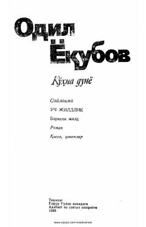

KDOdil Yoqubovning tarixiy 'Ko'hna Dunyo' romani va saylama asarlari.
Bu kitob Odil Yoqubovning uch jildlik saylama asarlarining birinchi jildi bo'lib, 'Ko'hna Dunyo' romani hamda qissa va hikoyalarni o'z ichiga oladi. Roman G'azna shahrida kechgan tarixiy voqealar, shoir va mayxo'rlar hayoti, saroy intrigalari haqida hikoya qiladi. Asar 1986-yilda Toshkentda G'afur G'ulom nomidagi Adabiyot va san'at nashriyotida chop etilgan.